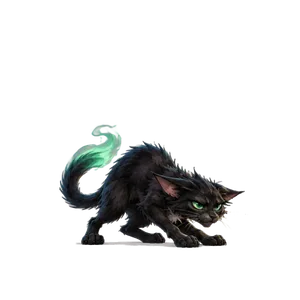
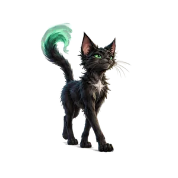
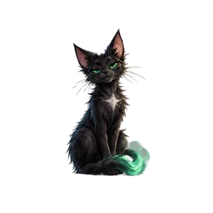

Sauvé !
Aventure terminée, tous les cryptides sont sauvés ! Ouvre ton grimoire pour les relâcher et gagner leurs figurines, ou lance une nouvelle aventure.

Touche l'écran pour ouvrir le grimoire

Des créatures se sont échappées du grimoire de Sporran. Aide-le à les retrouver !
Combien de cryptides veux-tu sauver ?
Coche les cryptides à sauver (au moins 2).
Pour les parents : cachez seulement ces QR codes de la planche.

Aventure terminée, tous les cryptides sont sauvés ! Ouvre ton grimoire pour les relâcher et gagner leurs figurines, ou lance une nouvelle aventure.